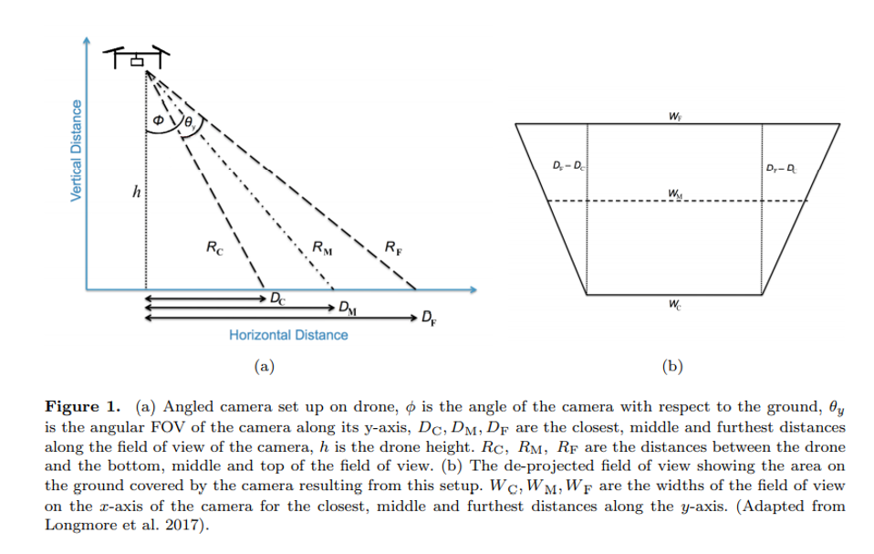
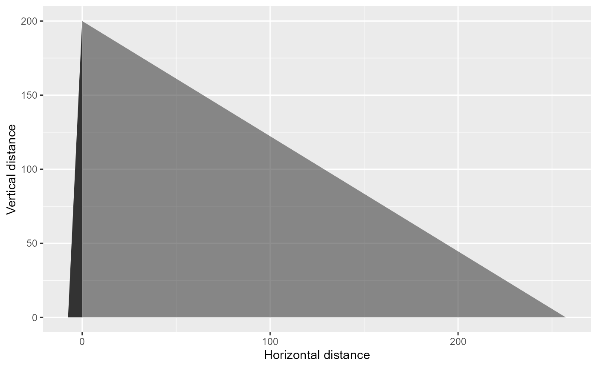
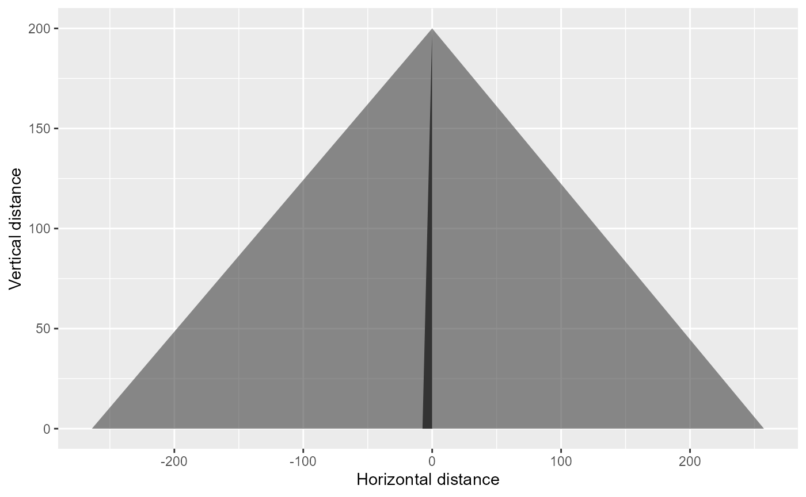
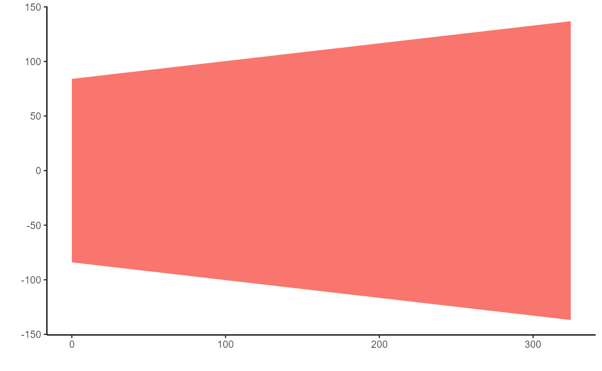

Working_out_the_trapezoid.Rmd
library(tidyverse)
library(Kulan)
library(data.table)
deg2rad=function(d){
rad=d*pi/180
return(rad)
}For this example the altitude of the drone is 200m, the angle of the camera is 25 degrees
h=200
# angle of camera
# 25 degrees
theta <- deg2rad(25)
# horizontal field of view
phi <- deg2rad(54.30)
# vertical field of view
omega <- deg2rad(37.84)From Burke et al.’s Appendix (and Figure 1 shown below) we can calculate the horizontal distance and the camera projection.
\(\theta\) is the angle that the camera is set at (in our case on one side of the drone =25 degrees)
\(\phi\) is the vertical field of view
 We can use pythagoras theorem to get the values for Dc, Dm and Df.
The horizontal distance visible to the camera is Df-Dc which in our case is 265.
The distance from the drone to the closest (c), median (m) and furthest distance (f) is denoted as R in the figure and we can calculate this as follows:
Rc=200.1408921
Rm=255.8223187
Rf=325.9471745
Here is a schematic plot of our data to attempt to match Figure 1a.
library(data.table)
dt.triangle <- data.table(group = c(1,1,1), polygon.x = c(0,Dc,0), polygon.y = c(h,0,0))
dt.triangle2 <- data.table(group = c(1,1,1), polygon.x = c(0,Df,0), polygon.y = c(h,0,0))
p <- ggplot()
p <- p + geom_polygon(
data = dt.triangle
,aes(
x=polygon.x
,y=polygon.y
,group=group
)
)
p+geom_polygon(
data = dt.triangle2
,aes(
x=polygon.x
,y=polygon.y
,group=group
, alpha=0.2
))+
labs(x="Horizontal distance", y="Vertical distance")+
theme(legend.position = "None")
In our case we have two cameras with different angles and we can plot these to show the images horizontal footprints.
theta2 <- deg2rad(25.7)
Dc2= h*tan(theta2-phi/2)
Df2= h*tan(theta2+phi/2)
Dm2= h*tan(theta2+phi*0.5/2)
dt.triangle <- data.table(group = c(1,1,1), polygon.x = c(0,Dc,0), polygon.y = c(h,0,0))
dt.triangle2 <- data.table(group = c(1,1,1), polygon.x = c(0,Df,0), polygon.y = c(h,0,0))
dt.triangle3 <- data.table(group = c(2,2,2), polygon.x3 = c(0,-Dc2,0), polygon.y3 = c(h,0,0))
dt.triangle3 <- data.table(group = c(2,2,2), polygon.x3 = c(0,-Df2,0), polygon.y3 = c(h,0,0))
p <- ggplot()
p <- p + geom_polygon(
data = dt.triangle
,aes(
x=polygon.x
,y=polygon.y
,group=group
)
)
p<-p+geom_polygon(
data = dt.triangle2
,aes(
x=polygon.x
,y=polygon.y
,group=group
, alpha=0.2
))
p+geom_polygon(
data = dt.triangle3
,aes(
x=polygon.x3
,y=polygon.y3
,group=group
, alpha=0.2
))+
labs(x="Horizontal distance", y="Vertical distance")+
theme(legend.position = "None")
To develop the trapezoid of the camera we need to look at Figure 1b. \(\omega\) refers to the horizontal field of view.
Wc=2*(Dc^2+h^2)^0.5*tan(omega/2)
Wm=2*((Dc+Df/2)^2+h^2)^0.5*tan(omega/2)
Wf=2*(Df^2+h^2)^0.5*tan(omega/2)Again we can attempt to recreate the image from Figure 1b
positions <- data.frame(
x = c(0, 0, Df-Dc, Df-Dc),
y = c(-Wc/2, Wc/2, -Wf/2, Wf/2)
)
ggplot(positions[c(1,2,4,3),], aes(x = x, y = y)) +
geom_polygon(aes(fill = "red"))+
labs(x="", y="")+
theme_classic()+
theme(legend.position = "None")